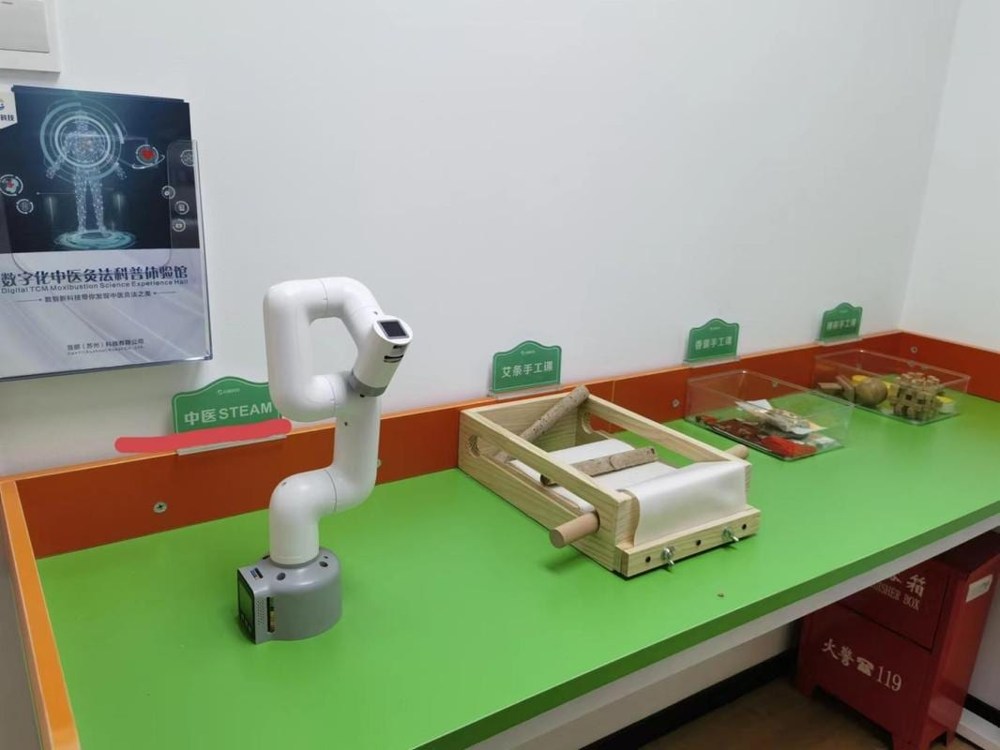

myCobot 280 机械臂

大象机器人出品的桌面级六轴协作机械臂，臂展约 280mm、负载约 250g，有 M5、树莓派、Jetson 等多个控制版本，支持 ROS 与 Python 二次开发，是科研教学的热门入门机械臂。
客观评测
myCobot 280 是桌面级六轴协作机械臂，臂展约 280mm，额定负载约 250g，重复定位精度约 ±0.5mm，整臂重量约 850g，采用关节内置驱动的步进电机方案。控制核心提供 M5Stack、Raspberry Pi 与 Jetson Nano 版本，供电约 12V，支持 myBlockly、pymycobot 与 ROS/ROS2，面向教育科研与轻量原型验证。
主观点评
myCobot 280 把“机械臂实验室”缩到了书桌上：开箱接电，拖动示教几步，它就记住轨迹；接上 Python，几十行代码跑起视觉抓取 demo。ROS 支持对研究生尤其友好，写好的算法迁移成本低。它的力气和精度当然不能和工业臂比，搬重物、做精密装配就别为难它了。作为算法验证与教学平台，它在这个价位几乎是最优解之一。
优点与不足
- 约 850g 的轻量机身，桌面部署零门槛
- pymycobot / ROS 接口开放，算法验证效率高
- 多控制版本可选，从入门到边缘 AI 平滑升级
- 250g 负载与 ±0.5mm 精度只适合轻量教学演示
- 步进电机高速运行时振动与噪音较明显
参数规格
| 自由度 | 6 个关节自由度（六轴） |
|---|---|
| 有效负载 | 约 250g |
| 工作半径 | 约 280mm |
| 重复定位精度 | 约 ±0.5mm |
| 关节驱动 | 步进电机 + 闭环控制（关节内置驱动） |
| 处理器 | 依版本而定：Raspberry Pi 4 / M5Stack / Jetson Nano 等 |
| 传感器 | 关节编码器（位置反馈） |
| 电池 | 无内置电池（需外接电源供电，约 12V） |
| 续航 | 插电持续工作（功耗约 10-20W 量级） |
| 控制方式 | 拖动示教、myBlockly 图形化、Python（pymycobot）、ROS/ROS2 |
| 末端扩展 | 支持夹爪、吸泵、摄像头等末端执行器（另购） |
| 重量 | 约 850g（整臂） |